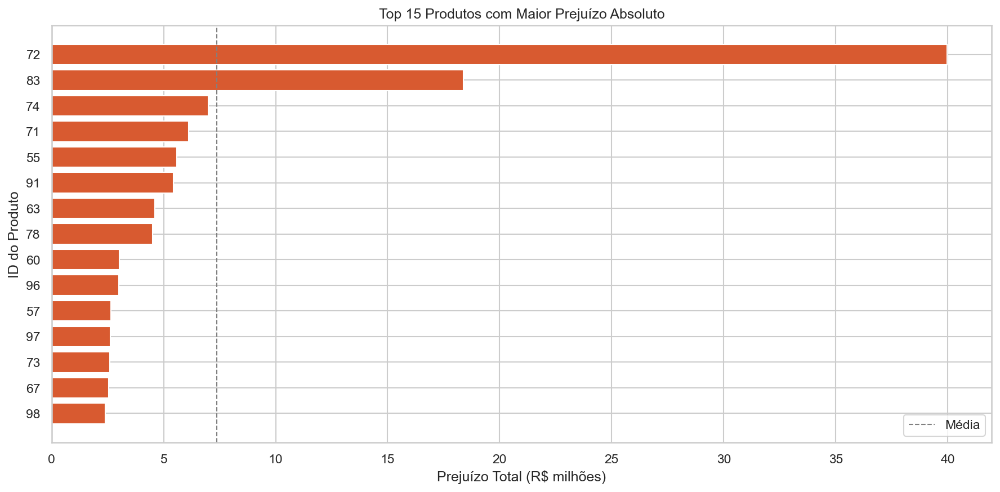
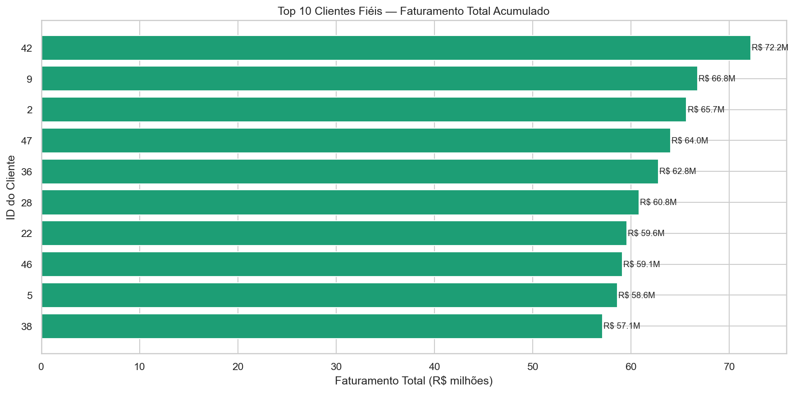
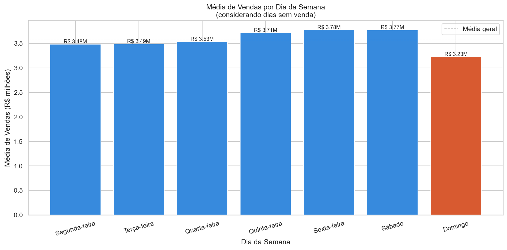
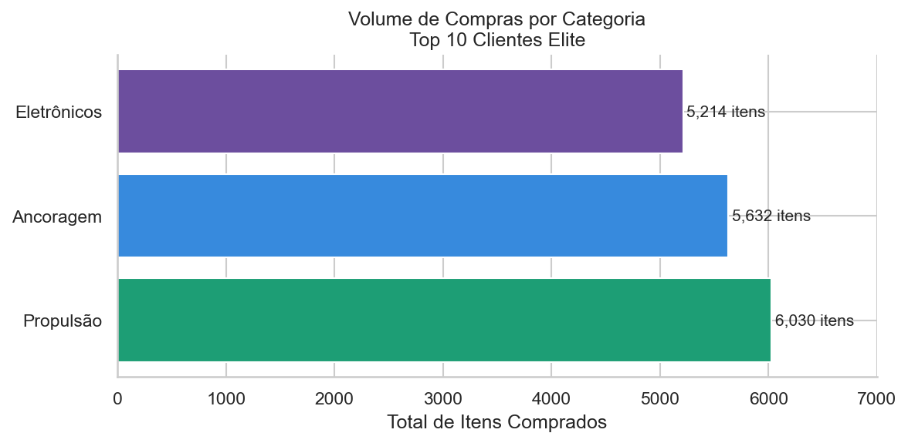
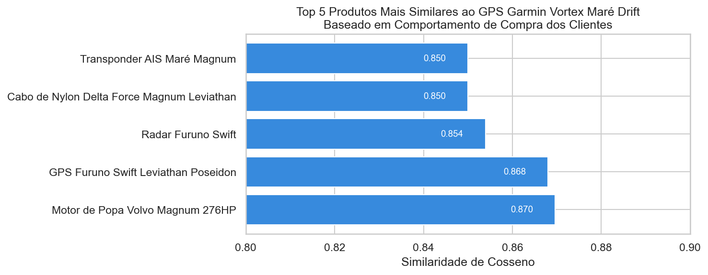
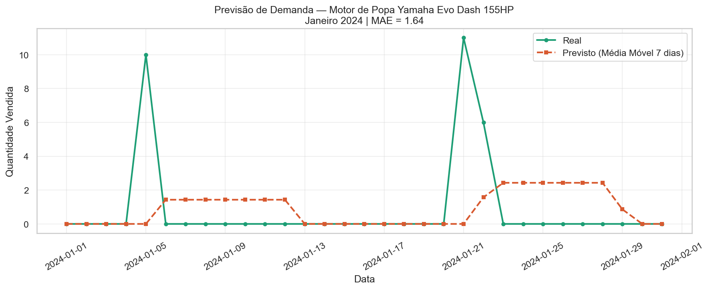

Análise estratégica de dados com identificação de riscos financeiros, oportunidades de crescimento e recomendações de ação imediata.
A análise da operação da LH Nautical identificou R$ 39,9 milhões em prejuízo operacional no período de dois anos analisado. A causa não é pontual. É estrutural: os preços de venda não acompanham a variação do câmbio, criando uma margem negativa sistemática que cresce junto com o volume de vendas.
"A integração entre vendas, custos em dólar e câmbio por data revelou R$ 39,9 milhões em prejuízo operacional que não é capturado quando as bases são analisadas de forma isolada."
A LH Nautical opera com uma assimetria estrutural: receitas em reais, custos em dólar. Quando o câmbio sobe, o custo de cada produto importado aumenta automaticamente — mas os preços praticados ao cliente não acompanham essa variação.
O resultado é uma erosão silenciosa de margem que não aparece no volume de vendas, mas aparece no caixa. E os dados mostram que esse desalinhamento não se restringe a alguns produtos ou a alguns meses: ele está presente em 6.213 das 9.895 transações do período analisado.
Mais de 6 em cada 10 transações foram realizadas abaixo do custo real de importação. Não se trata de exceção. É o padrão de operação atual. Enquanto o volume cresce, o prejuízo operacional escala junto.
O produto de maior prejuízo concentra 63,4% da sua receita total em perdas operacionais. É o ponto de intervenção mais urgente e de maior retorno imediato para a operação.
10 clientes compram nas três categorias da loja de forma consistente, com ticket médio entre R$ 290 mil e R$ 336 mil. São o perfil mais estratégico para retenção e expansão de receita recorrente.
A diferença de R$ 546 mil entre o melhor e o pior dia da semana representa oportunidade concreta para escalonamento de equipe e ações comerciais direcionadas por calendário.
A base operacional está estruturada e tem boa integridade. Registros de vendas, histórico de custos e cadastro de clientes já existem. O que falta é a camada de integração que transforma esses dados em decisões automáticas, especialmente em precificação e gestão de margem.

A análise integrada, considerando câmbio por data e custo vigente, revelou R$ 39,9 milhões em prejuízo operacional que não é capturado quando as bases são analisadas de forma isolada.
A correção não exige novos dados nem nova infraestrutura. A metodologia já foi desenvolvida e validada: custo vigente na data da venda, convertido pela cotação oficial do Banco Central. O próximo passo é a implementação de uma política de precificação vinculada ao câmbio.


Priorizadas por impacto financeiro e viabilidade de implementação com a infraestrutura atual.
Além da correção do problema de margem, a base de dados revela três vetores concretos de expansão de receita.
A categoria propulsão lidera o volume de compras entre os clientes elite (6.030 itens). Compradores de motores têm o maior potencial de evoluir para o perfil estratégico e devem ser o foco de aquisição.
O sistema de recomendação já identificou pares de produtos com alta co-ocorrência de compra. A vitrine "quem comprou também comprou" pode ser implementada sem nova infraestrutura.
Clientes que compram nas 3 categorias têm ticket até 27% acima da média e alta frequência. A estratégia de retenção desse grupo tem maior ROI do que aquisição de novos clientes em geral.


Apêndice Técnico — Suporte à validação dos resultados
As recomendações não são teóricas. Os mecanismos de decisão foram desenvolvidos, testados e validados sobre a base real da LH Nautical.
Validado em 9.895 vendas e 726 datas com cotação oficial do Banco Central.
Afinidade calculada entre todos os 150 produtos do catálogo.
Os 10 clientes prioritários mapeados com nome, localização e perfil de compra.
Erro médio de 1,64 unidades por dia. Benchmark para evoluções futuras.

9.895 registros de vendas (Jan 2023–Dez 2024), 150 produtos únicos, 1.260 registros de custo de importação em USD.
API oficial do Banco Central do Brasil (PTAX, cotação de venda). Cobertura de 100% das 726 datas únicas do período.
Último preço USD registrado antes da venda, convertido pela PTAX do dia e multiplicado pela quantidade. Impostos e frete não incluídos.
Similaridade de cosseno sobre matriz binária (49 clientes × 150 produtos). Prova de conceito, pois a base de clientes é insuficiente para produção.
Ticket médio, diversidade mínima de 3 categorias e desempate por ID. Top 10 por ticket médio entre clientes multidisciplinares.
Python 3, DuckDB, Pandas, Scikit-learn. Resultados validados por dupla verificação Python + SQL.
A LH Nautical possui dados, histórico e escala suficientes para suportar decisões estratégicas. O crescimento operacional atual ocorre com margem comprometida.
A metodologia já está validada, os clientes estratégicos estão identificados e os mecanismos de recomendação estão estruturados. A correção não depende de novos dados nem de infraestrutura adicional.
Manter a operação nas condições atuais implica sustentar perdas proporcionais ao crescimento de receita.
O próximo passo é implementar imediatamente uma política de precificação alinhada ao câmbio, com foco prioritário nos produtos de maior impacto financeiro identificados neste estudo.
Essa é uma decisão de gestão sobre captura de margem, não de tecnologia.